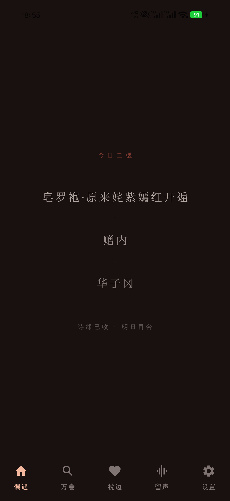
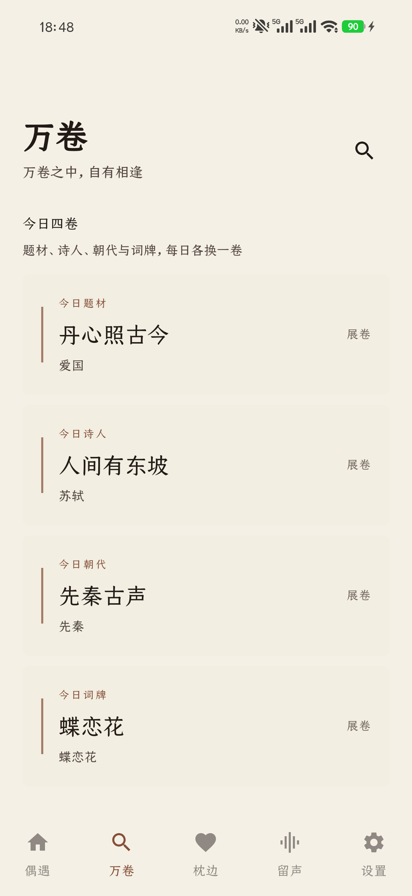
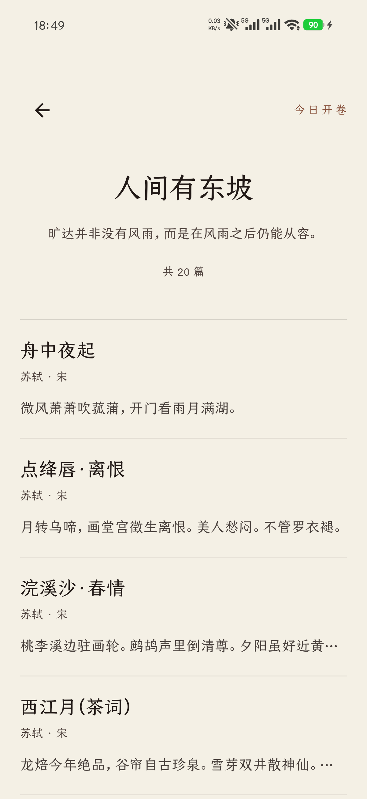
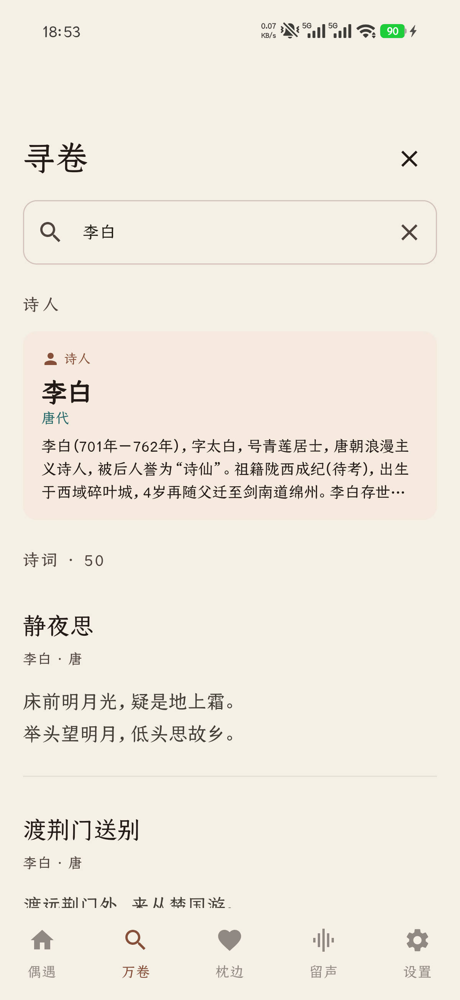
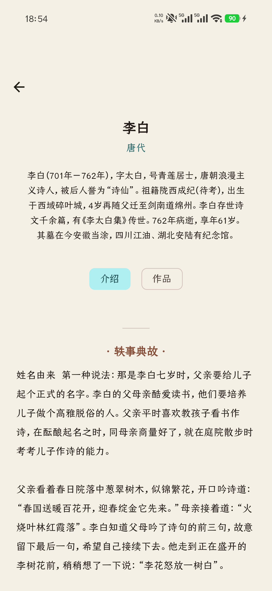
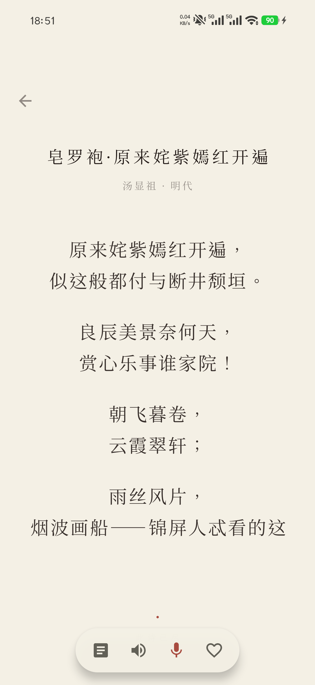
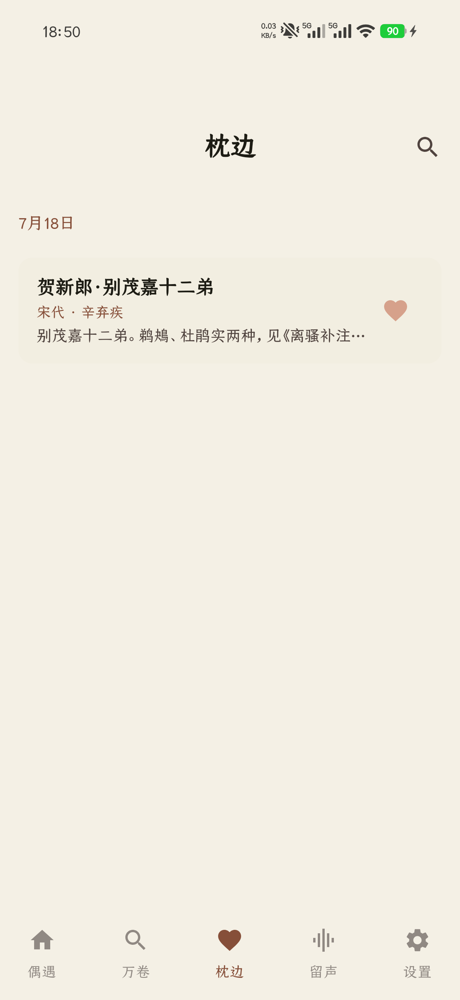
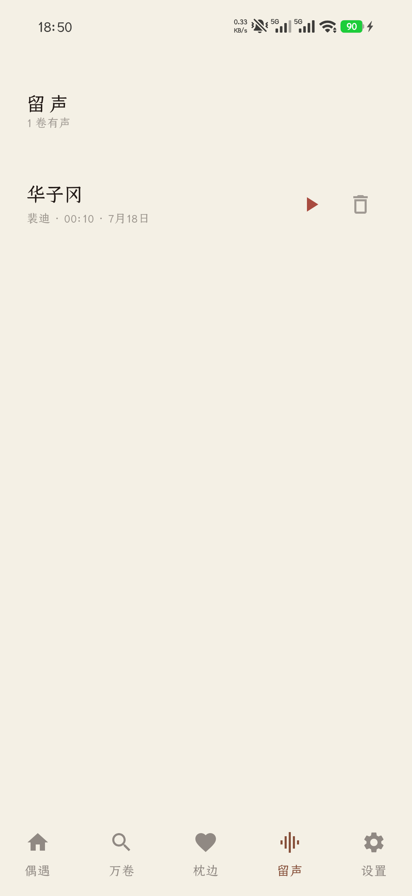
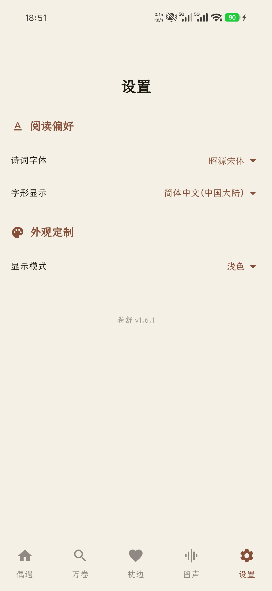

偶遇 · 每天只见三首
上滑展卷，一次只呈现一首。三遇结束后留下“今日三遇”，当天仍可逐首回看，明日重新相逢。
一款基于开源项目 SuFei 改进、为手机阅读古诗词重新设计的 Android 应用。每天三次相遇，让一首诗拥有进入、展开、停留与回味。


“仪式感来自节奏，
而不是元素堆叠。”
暖宣纸、低饱和墨色与克制的朱砂红，构成安静的阅读空间。功能在需要时出现，让注意力留给诗本身。
五个入口，各有节奏：偶遇负责相逢，万卷负责探索，枕边收好喜欢，留声保存自己的朗诵，设置只保留真正影响阅读的选择。
上滑展卷，一次只呈现一首。三遇结束后留下“今日三遇”，当天仍可逐首回看，明日重新相逢。
每日轮换题材、诗人、朝代与词牌四卷，每卷精选 20 篇；也能寻卷搜索标题、正文和诗人，继续进入诗人作品与生平。
正文优先占据屏幕，点按后才出现解读、系统朗诵、个人留声与收藏。长诗自然滚动，不被一屏截断。
收藏以日期整理，不制造无尽列表；需要时可以搜索，再次进入完整诗篇。
为任意诗词录下朗诵，试听确认后保存；可播放、重录或删除，所有声音只留在设备本地。
内置多套中文诗词字体，支持简繁字形、浅色、深色与跟随系统；所选字体直接应用到真实阅读页面。
全部使用 7 月 18 日从当前版本重新截取的真实界面。桌面以长卷式编排呈现，手机可横向滑动浏览。








内置诗词数据可离线浏览。收藏、每日三遇状态、外观偏好和个人录音均保存在你的设备上。
无需联网也能阅读、搜索与分类寻诗。
阅读进度、收藏和设置不依赖云端账户。
仅在你主动录制个人朗诵时请求麦克风权限。
卷舒 Android 版 · 最新版本 1.6.1
基于开源项目 SuFei 深度改进